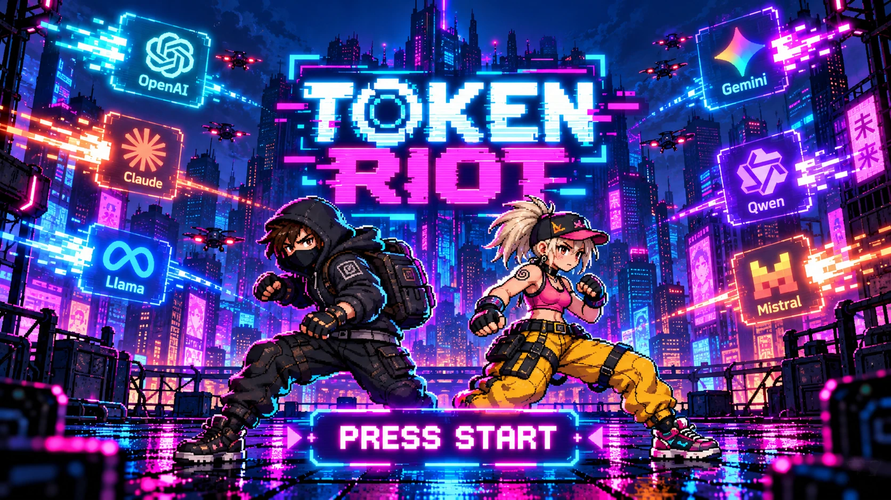

GOOGLEPLEX
Chrome patrols. Android enemies. Jump the G-bikes.
00:14 / IN-GAME CAPTUREA Non-Fiction Cyberpunk Arcade / BETA 0.1.16
Use AI to change the present. Choose when to spend power and when to save tokens: the best strategy is not always the most powerful model. A satirical adventure with Pili and Nano to save the planet’s cooperation, therefore the water.
NO PC INSTALLATION · 1–2 LOCAL PLAYERS

01 / THE GAME
Pili and Nano use AI to take on an exaggerated version of the AI world. That contradiction is deliberate: the game invites you to use technology thoughtfully rather than reject it.
Explore campuses, face fictional versions of their leaders and cross the Pacific. The stories mix recognizable references with invented dialogue and comic exaggeration; they are not reporting or claims about real people. In the finale, the planet’s water becomes the countdown for a shared challenge.
GAMEPLAY / STRAIGHT FROM THE GAME
Two short captures from the actual game engine. Real combat, real enemies, real dodges.
Chrome patrols. Android enemies. Jump the G-bikes.
00:14 / IN-GAME CAPTURERocket fire. Fast cars. No time to stand still.
00:14 / IN-GAME CAPTUREScripted play captured with the production game renderer. Music from each stage.
try it by yourself online ↗02 / EVERY TOKEN COUNTS
You start with zero tokens and a basic model with unlimited shots but lower damage. Defeat enemies to earn tokens. Higher-tier models hit harder and spend tokens with every projectile: power comes at a cost.
Save powerful models for bosses and tough situations. Combine tools, skills and subagents when their advantage justifies the cost. At the end, saved tokens become a virtual USD score based on your chosen company’s AI pricing. Winning also means achieving more with less.
03 / ONE JOURNEY, TWELVE BATTLES
04 / GET INTO THE ACTION
Up to three shots per press. Jump, crouch and guard. Open the console to switch models and use your resources.
Change and save key bindings in Settings.
Android includes touch controls.
THE STRATEGY / USE BETTER, NOT MORE
Start with the basic model and earn resources by defeating enemies. Each player manages their own balance.
Open the console and type models. Use the arrow keys and Enter to choose. A higher-tier model deals more damage but charges for every projectile.
tools deploys tools; skills activates abilities; subagents calls helpers. Check their costs before using them. Healing also costs tokens.
Avoid impulse spending: save power for when it changes the outcome. Your final balance rewards efficiency.
Tokens are a simplified game resource. Costs and damage are balancing rules, not a measure of actual model performance or a reproduction of API billing.
THE MEANING OF THE REBELLION
AI is necessary and part of our future. TOKEN RIOT’s message is that its best path lies in cooperation and global agreement, beyond competition, nationality or political views.
Every leader and team in the industry has an important role in that future. Here they appear as comedy characters: the supposed ambitions, disputes and accusations in the scenes are satirical devices, not judgments about real people. Even the rebels rely on AI to rebel. That irony is the heart of the game.
TOKEN RIOT is an entertainment work of satirical fiction about the current state of artificial intelligence. It uses humor, exaggeration, caricature and arcade conventions to explore responsible resource use, technological competition and the need for cooperation. It is not a documentary, a journalistic investigation or a source of information about the conduct of individuals or companies.
Recognizable names and references provide context for the parody. Dialogue, motives, conflicts and behavior attributed to characters are fictional dramatizations. Scenes about company origins and the criticism or accusations surrounding them must not be interpreted as factual assertions, verified allegations or actual quotations. Images and appearances have been stylized or caricatured solely for artistic and comic purposes.
The work does not seek to attack, humiliate or ridicule real people, create hostility or controversy against them, or promote violence, harassment or discrimination. Combat is a fictional game mechanic and does not express wishes, threats or invitations to act in the real world. The contributions of participants in the AI ecosystem are recognized regardless of nationality, country or political views.
The paradox of using AI to fight characters associated with AI is intentional. The purpose is to highlight its usefulness and, through humor, suggest a future of collaboration and global agreements. The appearance of names, brands, logos or individuals does not imply affiliation, sponsorship, authorization or endorsement by their owners. Trademarks and other third-party rights belong to their respective owners; this notice does not claim such rights for the author.
This notice explains the work’s intention and artistic context; it does not limit rights under applicable law or guarantee exemption from liability.
05 / YOUR NEXT GAME
On Android: open the APK and allow installation from your file manager if prompted. This beta is not yet available on Google Play.